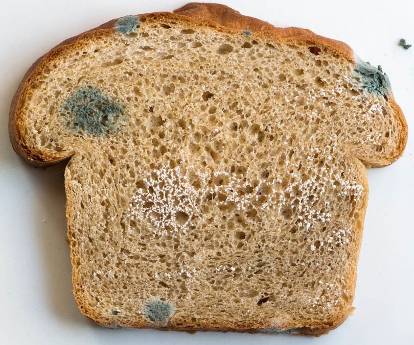

you toss the moldy bread into the trash
you're reminded of that one time your uncle accidentally ate a moldy hotdog bun and fell ill for a couple of days. mold may taste harmless but it's stronger than you think. besides, ergot from rye is what caused the salem witch trials right? you don't want to become a witch.
would you like to try something else?